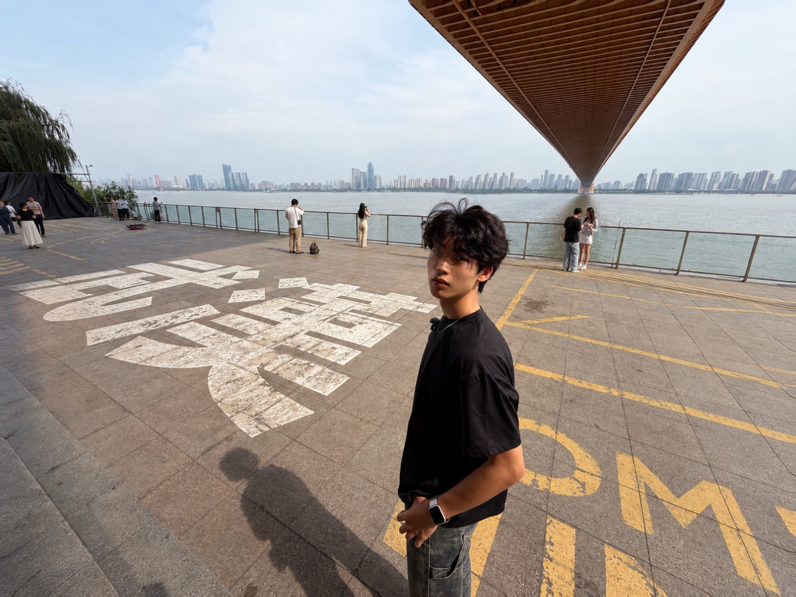
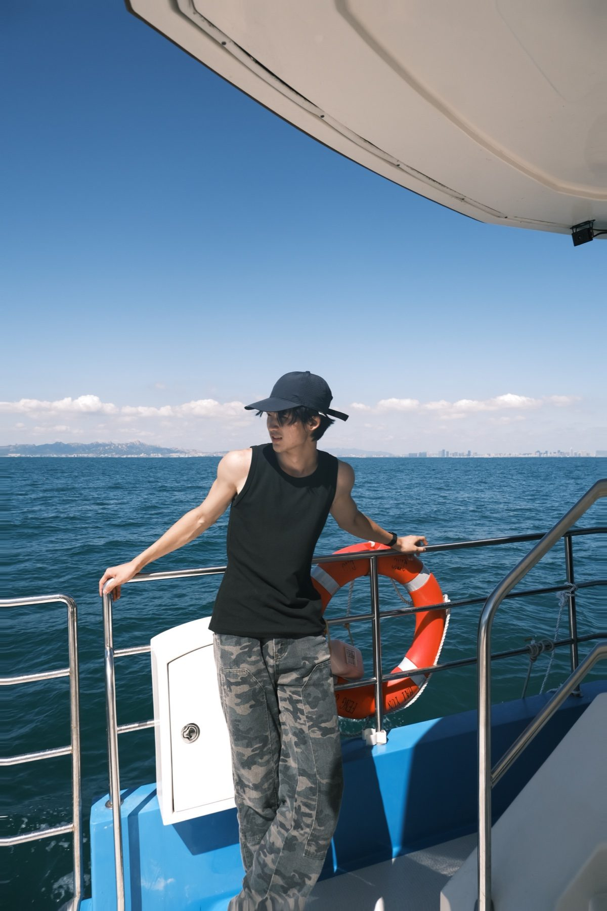
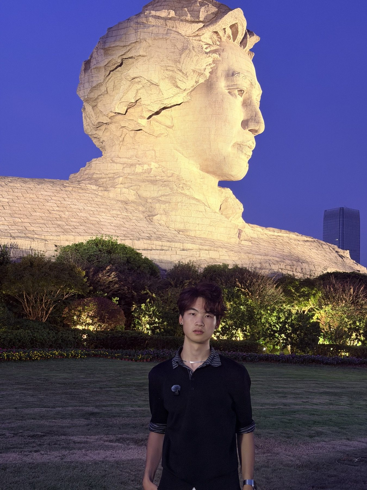
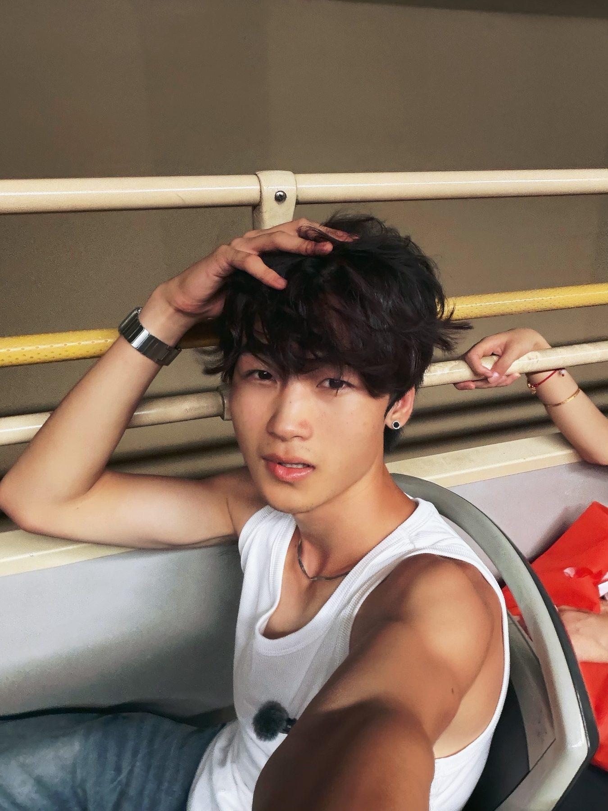
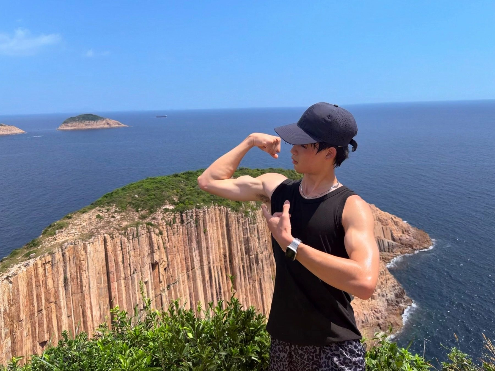

海尔 LC
新媒体渠道运营实习生抖音渠道
参与抖音渠道内容运营及直播协助，接触品牌内容从选题到视频制作的工作过程。
- 内容选题参与抖音内容选题，为视频制作提供选题思路。
- 拍摄与剪辑参与视频拍摄及剪辑制作，支持渠道内容产出。
- 直播协助参与直播协助工作，配合团队完成直播相关任务。
陈星宇 ENTP
青岛农业大学影视飓风 · 剪辑实习申请
BEHIND THE CAMERA





陈星宇 / 青岛农业大学 / ENTP
喜欢摄影、旅行，也喜欢做视频。
把路上的城市与山海，变成自己的影像故事。
常用软件
影视飓风 · 剪辑实习申请
从个人表达，到团队创作
「探索计划」是我的个人抖音创作系列。香港、麦理浩径、青岛、灵山岛、长沙五部短片均独立完成，把旅行中的出镜记录和实拍画面整理成自己的表达。
在清华大学乡村振兴工作站实践中担任宣传组组长，参与策划、拍摄、剪辑、调色及声音制作；在海尔 LC 实习期间，参与抖音选题、拍摄、剪辑和直播协助。
希望加入影视飓风，在真实的创作与协作中成长，把对生活的观察变成更好的作品。
EXPERIENCE / FROM IDEA TO SCREEN
新媒体渠道运营实习生抖音渠道
参与抖音渠道内容运营及直播协助，接触品牌内容从选题到视频制作的工作过程。
用短视频收藏旅途里的城市、风景和生活片段。
宣传组组长赴山东济宁微山支队
在团队宣传中参与策划、拍摄、剪辑、调色及声音制作，把地方生活与实践过程整理为影像内容。
WHY MEDIASTORM
从看到影视飓风发射卫星开始，我便持续关注这个频道。吸引我的不仅是视频，还有一群有趣、有想法、热爱生活的人。
我同样喜欢摄影，喜欢用视频记录生活、表达自己。希望有机会加入这个团队，在真实的创作和协作中成长，把这份热爱变成更好的作品。